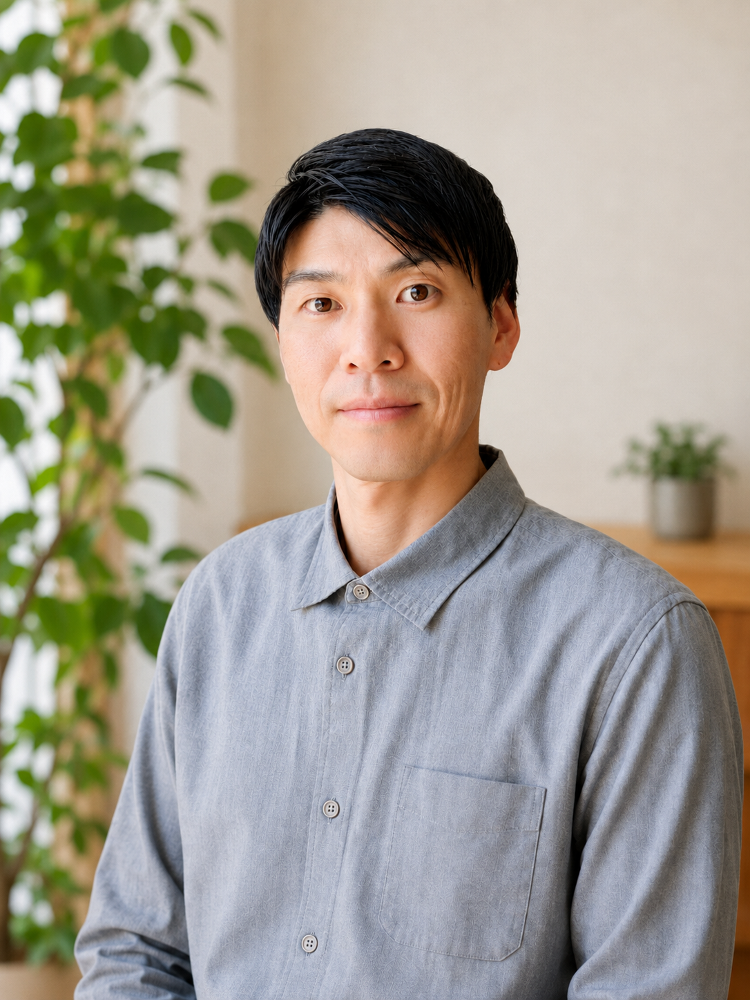

理学療法士が現場を訪問し、身体負担を見える化。
腰痛・転倒予防につながる改善をご提案します。
ご相談・お見積りは無料です。まずは現状をお聞かせください。
総合病院での
理学療法士としての臨床経験
腰痛を訴える社員が多い
高齢化で身体負担が増えている
転倒災害を減らしたい
健康教育を何から始めればよいかわからない
健康経営に取り組みたい
外部の専門家へ相談したい
そんな課題に対し、現場を確認しながら改善を支援します。
机上の提案ではなく、実際の作業を見たうえでご提案します。
現場を見て、整理して、提案する。この3ステップが基本です。
実際の作業環境や動作を確認します。どの工程で身体に負担がかかっているのかを、その場で確認させていただきます。
姿勢・動作の分析をもとに、身体への負担と改善ポイントを整理してお示しします。感覚ではなく根拠でお伝えします。
現場に合わせた作業改善のご提案や、社員向けセミナーを実施します。すぐ取り組める内容からご提案します。
入院・外来を通じて疾患全般に対応してきました。腰痛をはじめとする慢性疼痛への対応を専門としています。
身体の動きを評価する国家資格者が、作業姿勢や動作から負担のかかり方を見極めます。
医療と職場、双方の視点からご提案できることが強みです。
一度きりの研修で終わらせず、現場の実情に合わせて継続的にご相談いただける関係づくりを大切にしています。
フォーム・メール・お電話のいずれかでご連絡ください。
職場の状況やお困りごとをお伺いします。オンラインでも対応します。
実際の作業現場を訪問し、作業環境と動作を確認します。
身体負担の整理結果と、現場に合わせた改善案をご報告します。
セミナー・体力測定・健康経営支援など、必要に応じて継続的にお手伝いします。

庵原航Ihara Wataru
理学療法士 ／ 健康経営サポート 庵原航 代表
医療現場で培った経験を活かし、地域企業で働く人が安心して働き続けられる環境づくりを支援しています。 痛みや不調は、我慢して続けるほど回復に時間がかかります。 だからこそ、現場に出向いて「今の負担」を一緒に確認することから始めています。
地域社会に生きがいを。 人は自分の役割を持ち、誰かとつながり、自分らしく生きられるときに健康になる。理学療法士として身体を支え、産業保健の実践者として働く人を支え、人が「生活する」意味を常に考えながら、地域社会に貢献していきます。
「何を相談すればよいかわからない」という段階でも構いません。
現場の状況をお聞かせいただくところから始めます。
ご相談・お見積りは無料です／通常2〜3営業日以内にご返信します
送信の前にプライバシーポリシーをご確認ください。
スマートフォンで読み取ると
お問い合わせフォームが開きます。
名刺・チラシからのご連絡もこちらへ。